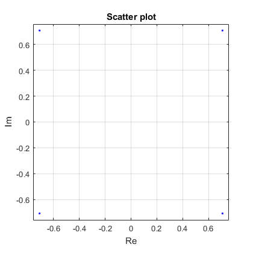
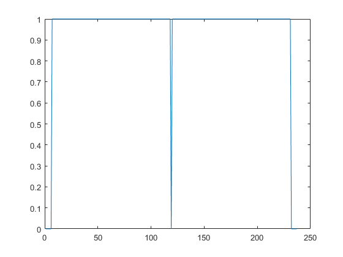
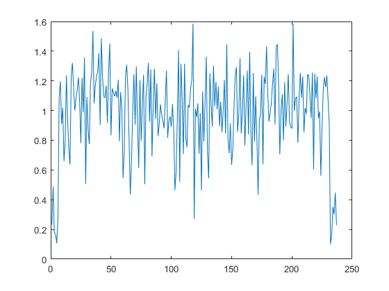
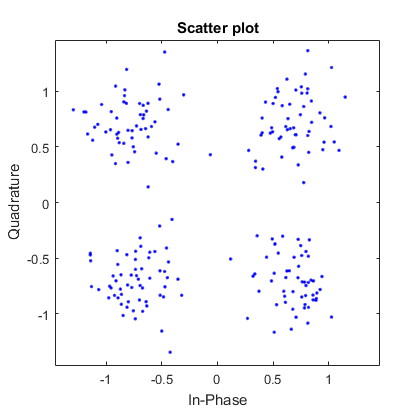
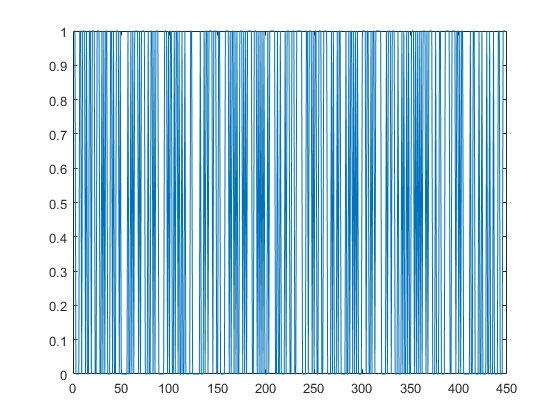
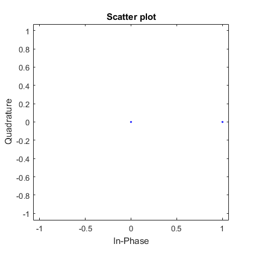

Contents
% https://portal.3gpp.org/desktopmodules/Specifications/SpecificationDetails.aspx?specificationId=2719 % % Description of physical layer parameters on the page 136 in 45820-d10.doc % описание физического уровная на странице 136 45820-d10.doc % % https://b.gorelkin.me/documents/N-BCCH/45820-d10.doc % https://b.gorelkin.me/documents/N-BCCH/36212-f40.docx %====================================================================================== %| Payload = 152; | Длина массива (Полезная нагрузка) | %| CRC = 18; | Контрольная сумма 36212-f40-> раздел 5.1.1 "CRC calculation"| %| TailBits = 6; | Защитный интервал (защита от межсимвольной интерференции) | %| N = Payload + CRC; | Итоговая длина массива | %| BIT=randi([0 1],1,N); | Передаваемые данные | %| CP = 20; | Длина цикллического префикса | %======================================================================================= %======================================================================================= %| Payload = 152; | Array length, (informational message) | %| CRC = 18; | Check sum 36212-f40-> Section 5.1.1 "CRC calculation" | %| TailBits = 6; | Guard interval (ISI protection - InterSymbol Interference) | %| N = Payload + CRC; | Итоговая длина массива | %| BIT=randi([0 1],1,N); | Передаваемые данные | %| CP = 20; | Cyclic prefix length | %======================================================================================= clc clear all close all
Generating a message of random numbers (0,1)
Генерация массива рандомных чисел (0,1)
Payload = 152; CRClength = 18; CRC = [randi([0 1],1, CRClength)]; TailBits = 6; BIT = [randi([0 1], 1, Payload),CRC] CP = 20;
Convolutional encoding
Сверточне кодирование encoded with the 1/3 rate convolutional mother code defined by the polynomials: G4 = 1 + D2 + D3 + D5 + D6 G5 = 1 + D + D4 + D6 G6 = 1 + D + D2 + D3 + D4 + D6
trel = poly2trellis(7,[171 133 165]); % Encoding lattice | Решетка кодирования tblen = TailBits; % Depth of viewing when decoding | Глубина просмотра при декодировании zero = zeros(1,tblen); % an array of length tblen was added to the BIT sequence so that no bits are cut off during decoding BITunited = [BIT,zero]; % к последовательности BIT добавили массив длиной tblen, для того чтобы при декодировании не обрезались биты % Since the rate of the convolutional encoder 1/3 at the output of the message is increased by 3 times (Overcoding) codeBIT = convenc(BITunited,trel); % т.к. скорость сверточного кодера 1/3 на выходе сообщение увеличчивается в 3 раза (Избыточное кодирование) % The second version of the convolutional coding % Вторая версия сверточного кодирования % trel = struct(... % 'numInputSymbols',2,... % 'numOutputSymbols',8,... % 'numStates',4,... % 'nextStates',[0 2;0 2;1 3;1 3],... % 'outputs',[0 3;1 2;3 0;2 1]); Jpuncturing=1:80; %Punching values 45820-d10 -> page 137 | Значения для выкалывания 45820-d10->страница 137 %The code is punctured in such a way that the next 80 encoded bits are not transmitted. C=23+5*Jpuncturing; %Код прокололся таким образом, что следующие 80 закодированных битов не передаются. %The result is a block of 448 encoded and punctured bits, P (0) ... P (447). codeBIT_punct = codeBIT; %В результате получается блок из 448 кодированных и проколотых битов, P (0) ... P (447). codeBIT_punct (C)=[];
Interleaver
Перемежитель Sets the initial state of the random number generator, which is used to calculate the permutation order. The permutations generated for any fixed value of the state parameter are repeatable and reversible; however, different values of state will give different permutations.
state = 0; %задает начальное состояние генератора случайных чисел, который используется при расчете порядка перестановки. Перестановки, генерируемые для любого фиксированного значения параметра state, являются повторяемыми и обратимыми, однако разные значения state дадут разные перестановки. codeBIT2 = randintrlv(codeBIT_punct,state); % Ready sequence for transmission to the modulator y = codeBIT2; %Готовая последовательность к передаче = y
Modulator
Модулятор
for i = 1 : length(y) / 2 if y(2*(i-1)+1)==1 && y(2*i)==1 outmod(i)=0.707+1i*0.707; end if y(2*(i-1)+1)==1 && y(2*i)==0 outmod(i)=-0.707+1i*0.707; end if y(2*(i-1)+1)==0 && y(2*i)==0 outmod(i)=-0.707-1i*0.707; end if y(2*(i-1)+1)==0 && y(2*i)==1 outmod(i)=0.707-1i*0.707; end end % Guard interval length (left and right) Zint = Total symbol duration minus useful symbol duration (1/4, 1/8, 1/16, or 1/32 of the OFDM symbol duration) % Длина защитного интервала (слева и справа)Zint=Полная длительность символа минус полезная длительность симмвола (1/4, 1/8, 1/16 или 1/32 от длительности OFDM символа) SpecOFDM = [zeros(1,TailBits), outmod(1:length(outmod)/2),0,outmod(length(outmod)/2+1:end), zeros(1,TailBits)]; %____inverse fourier transform | обратное преобразование фурье____% OPF = ifft(SpecOFDM); TimeFFT = OPF; %____Adding a cyclic prefix | Добавление циклического префикса____% Z = TimeFFT((length(TimeFFT)-CP+1):end); o = [Z(1:end) TimeFFT];
Adding noise | Добавлние шумов
SNR = 10,4; Noise=awgn(o,SNR,'measured'); % awgn(Массив, величина SNR, 'считает сам по мощности сигнала') %ncodeBIT = rem(codeBIT + randerr(200,1,[0 1;.95 .05]),2); %awgn (взять из гугла)Добавляю шум
Receiver | Приёмник
%____Remove cyclic prefix | Удалине циклического префикса____% Z1 = Noise((CP+1):length(Noise)); %___Fourier Transform | Прямое преобразование Фурье____% TimeFFT = fft(Z1); %___Removing the guard interval | Убираем защитный интервал____% SpecOFDM1 = [TimeFFT(TailBits+1:length(TimeFFT)/2),TimeFFT(length(TimeFFT)/2+1:end-TailBits)]; %___Demodulator | Демодулятор for i = 1 : length(SpecOFDM1) if real(SpecOFDM1(i))>0 && imag(SpecOFDM1(i))>0 outdemod((i-1)*2+1)=1 outdemod(2*i)=1; end if real(SpecOFDM1(i))<0 && imag(SpecOFDM1(i))>0 outdemod((i-1)*2+1)=1 outdemod(2*i)=0; end if real(SpecOFDM1(i))<0 && imag(SpecOFDM1(i))<0 outdemod((i-1)*2+1)=0 outdemod(2*i)=0; end if real(SpecOFDM1(i))>0 && imag(SpecOFDM1(i))<0 outdemod((i-1)*2+1)=0 outdemod(2*i)=1; end end
Decoding
Декодирование
%____Interleaved DECoding | Перемежительное ДЕкодирование____% decodeBIT2 = randdeintrlv(outdemod,state); % The result is a block of 448 encoded and punctured bits, P (0) ... P (447). % INSERT ELEMENTS INSIDE THE ARRAY at puncture sites 23 to 344 %В результате получается блок из 448 кодированных и проколотых битов, P (0) ... P (447). %ВСТАВИТЬ ЭЛЕМЕНТЫ ВНУТРЬ МАССИВА на места проколов с 23 по 344 элемент z = zeros(1,528); z1 = [decodeBIT2(1:23)] z2 = [decodeBIT2(344:end)] n = 24; for i = 24:5:423 z(i) = decodeBIT2(n); n=n+1; z(i+1) = decodeBIT2(n); n=n+1; z(i+2) = decodeBIT2(n); n=n+1; z(i+3) = decodeBIT2(n); n=n+1; end codeBIT_DEpunct = [z1(1:end),z(24:423),z2(1:end)]; % %____Convolutional DECODE | Сверточное ДЕкодирование____% decodeBIT = vitdec(codeBIT_DEpunct,trel,tblen,'cont','hard');
Graphic display | Графическое отображение
scatterplot(outmod); %figure (1) созвездие grid on xlabel('Re') ylabel('Im') figure plot(abs(SpecOFDM)); figure plot(abs(TimeFFT)); scatterplot(SpecOFDM1); figure plot(1:length(TimeFFT),abs(TimeFFT)); figure plot(outdemod); scatterplot(outdemod);     
Comparison Before and After | Сравнение До и После
a = [BITunited((1:length(decodeBIT)-TailBits))];
b = [decodeBIT(TailBits+1:length(BITunited))];
raznica = a/b; % If equal to 1 then the message was transmitted without errors
sravnivanie(1,:) = [BITunited((1:length(decodeBIT)-TailBits))];
sravnivanie(2,:) = [decodeBIT(TailBits+1:length(BITunited))];